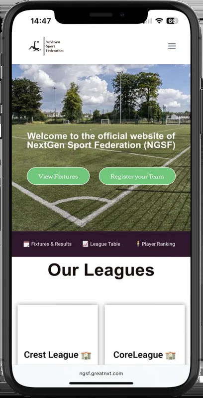
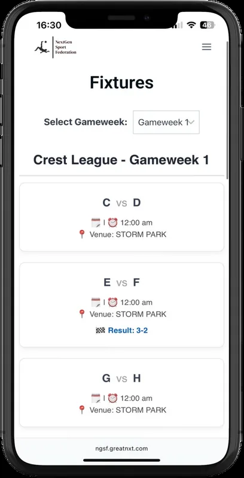
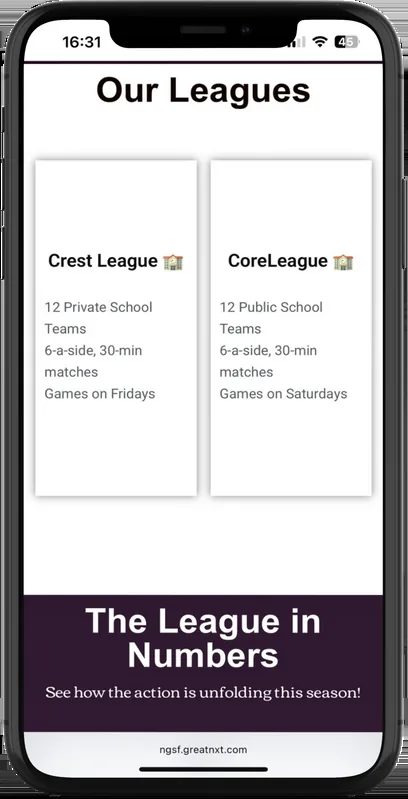
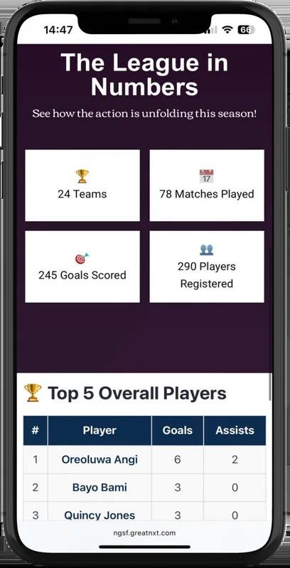

Sports · Publishing
NGSF
A football federation site that keeps up with match day.

The brief
NextGen Sport Federation runs two active leagues. The site had to publish fixtures, results, tables and top scorers week after week, without the admin team touching code.
Supporters needed to find the next match quickly. Clubs needed a clear way to register. The federation needed both to work on a phone at the side of a pitch.
What I built
- Fixtures and results by league and gameweek
- League tables that update from match data
- Top scorer tracking across the season
- Federation news and announcements
- Club registration and contact flow
On a phone



